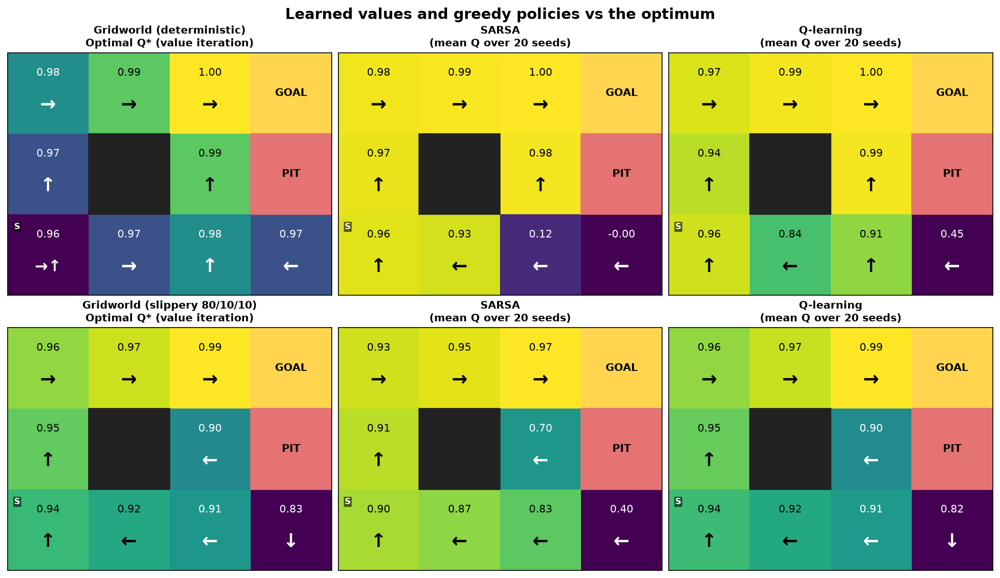
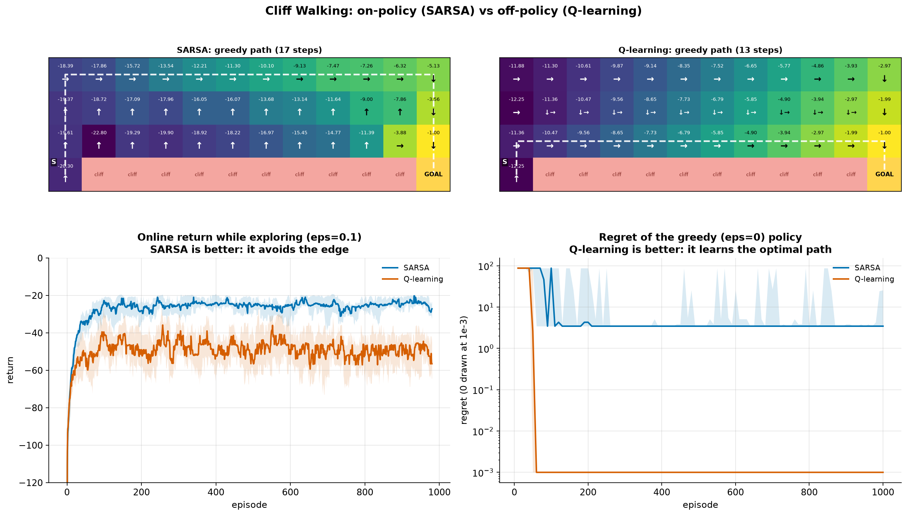
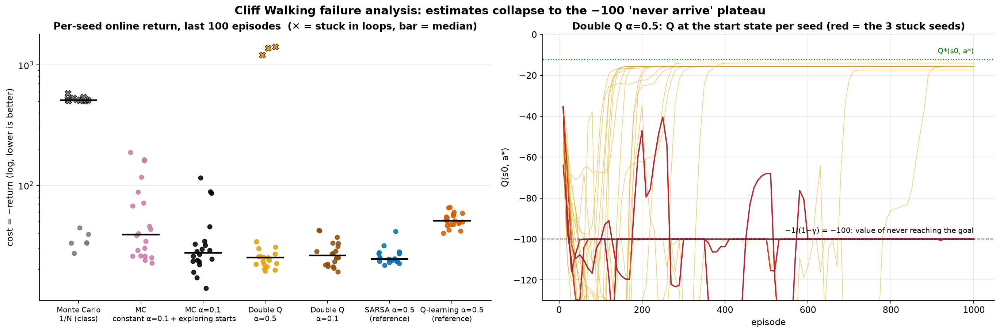
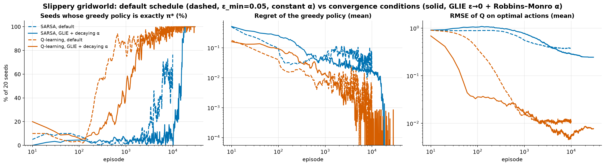
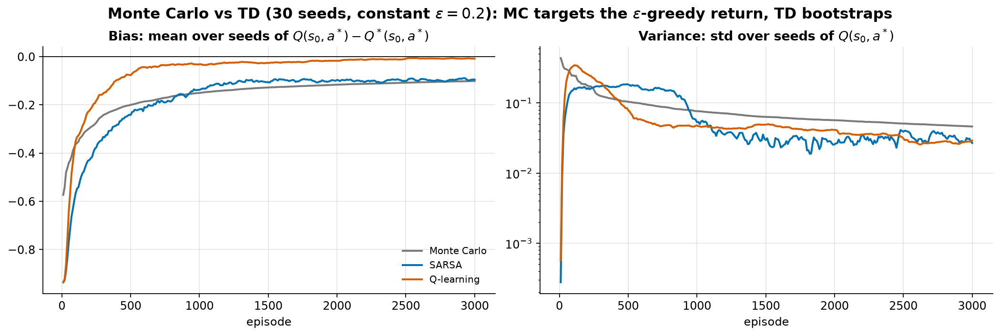
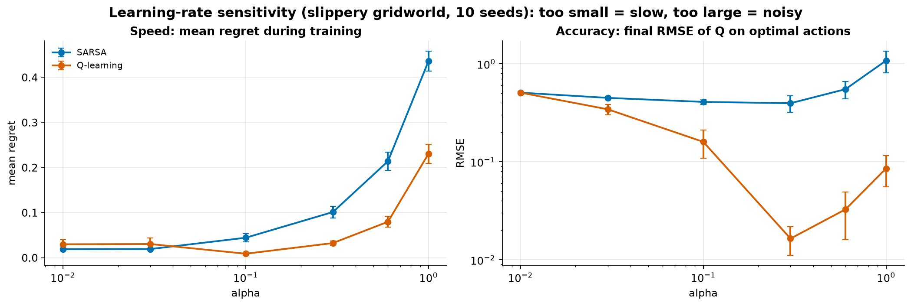
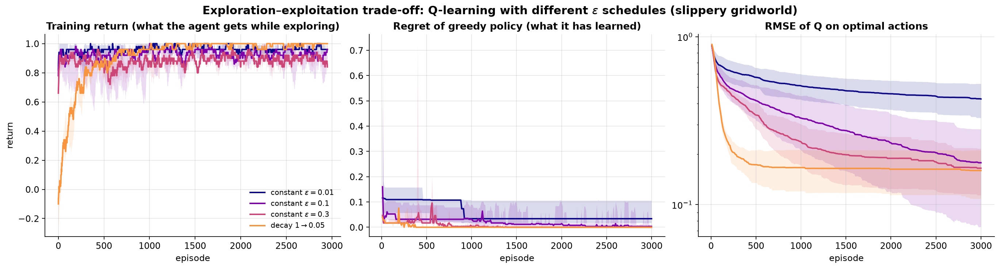
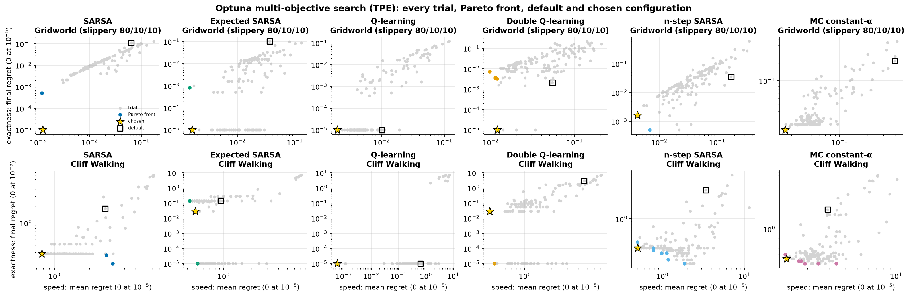
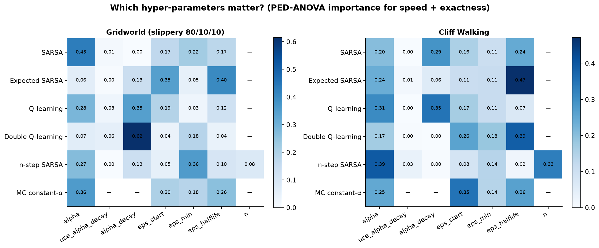

SARSA vs Q-learning, and what it
takes to make them converge
Igor Ruiz · Andoni Garrido
Universidad de Deusto · October 2026
start ↑ · the dashed line is the optimal path
The 3×4 grid from class: +1 goal, −1 pit, one wall.
80% the intended move, 10% to each side. Every update becomes noisy.
−1 per step, −100 for falling off the cliff (Sutton & Barto).
They only call reset() and step(), never the model.
V*(s₀) − Vπ(s₀), with Q* from value iteration. 0 means truly optimal.
We report the spread, not one lucky run.


Safe path · 17 steps
Return while exploring −25.8
Greedy policy optimal 0 / 20
Edge path · 13 steps
Return while exploring −51.9
Greedy policy optimal 20 / 20
SARSA learns the policy it follows, random steps included. Q-learning learns the greedy one.
≥ 94% optimal actions in all three environments.
Averaging over the next action removes noise.
It needs episodes that end, and with a bad early policy they don't.
On-policy methods only reach the optimum when ε → 0 (GLIE).
α / (1 + k·N(s,a)) lets the values settle even with random moves.
MC with 1/N got stuck at −100 in 14/20 seeds. A constant α: 0/20.

SARSA and Q-learning both solve the class gridworld, deterministic and slippery
Q-learning learns the optimum; SARSA learns the policy it follows, so it plays safe
Convergence needs ε → 0 and a shrinking α, and Optuna found exactly that
Fully reproducible: seeded runs, one command redraws everything
Questions?
github.com/ElTiToRuiz/assignment-1
| Environment | Value iteration sweeps | Policy iteration steps |
|---|---|---|
| Deterministic grid | 6 | 6 |
| Slippery grid | 145 | 7 |
| Cliff Walking | 15 | 15 |
Applies the Bellman optimality equation until V stops changing: cheap sweeps, many of them.
Solves the Bellman equation exactly, then improves greedily: few, expensive steps.
Both agree. It is only used to grade the agents, who never see P.

Dashed: default (ε ≥ 0.05, constant α). Solid: ε → 0 and α = 0.5 / (1 + 0.005·N). Both reach 20 / 20 seeds; SARSA needs about 15× more episodes than Q-learning.





Two goals at once: learn fast and end exactly optimal. We keep the Pareto front and pick the point with the smallest sum. Trial 0 (the square) is always the default.